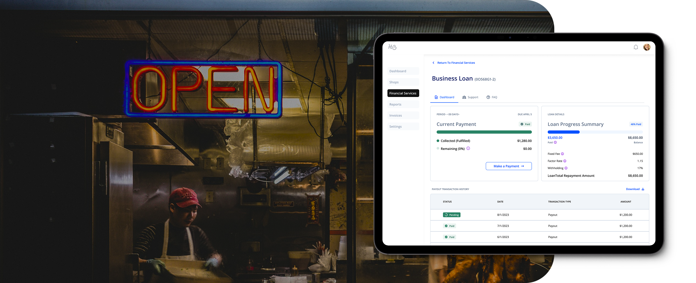
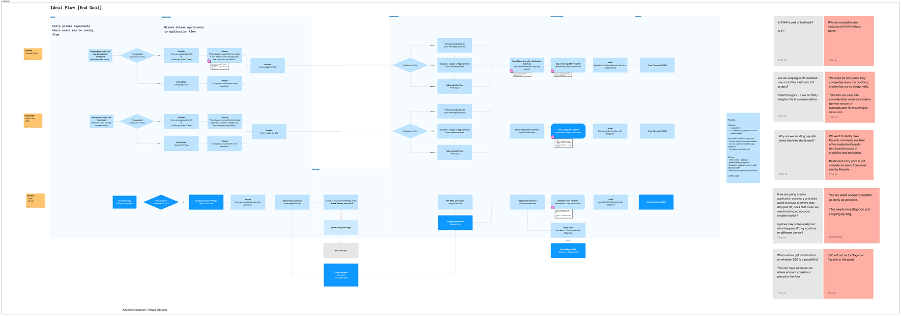
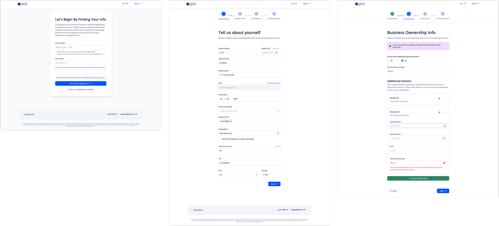
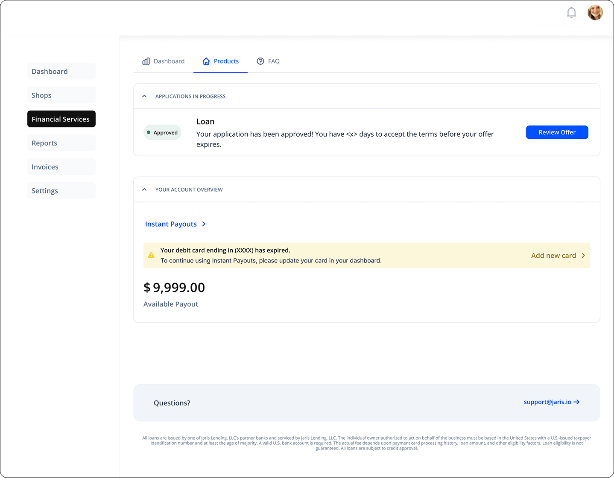
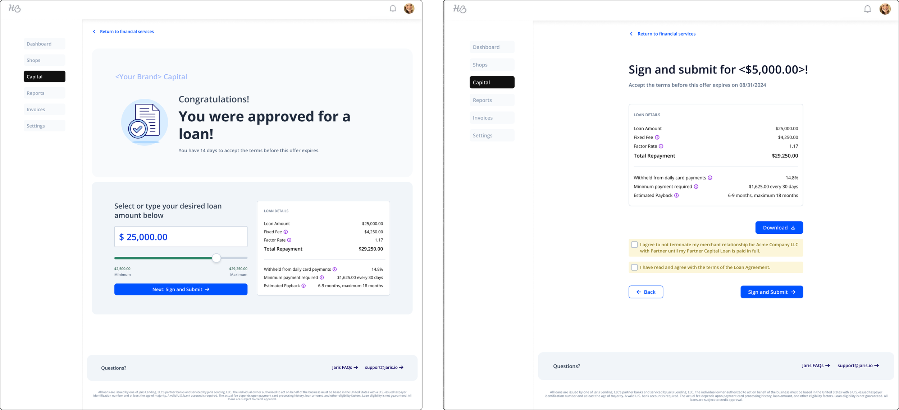
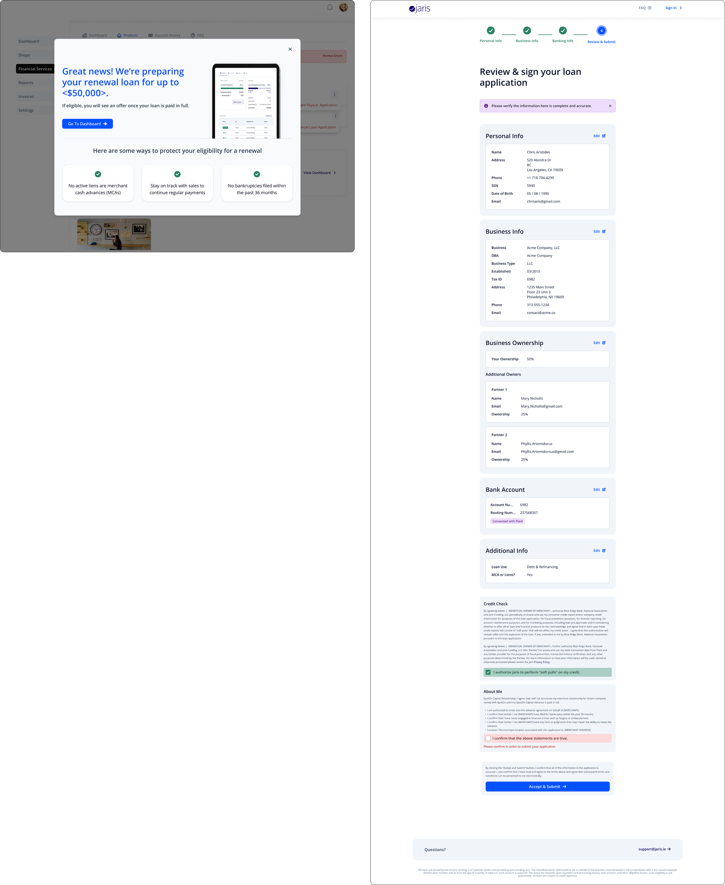

Designing a Seamless Digital Lending Experience
I designed a modern digital lending platform with a focus on creating an intuitive experience for borrowers, improving efficiency, and building trust while addressing key pain points in the lending process.

In this case study, I detail the process of independently designing a comprehensive software solution for a modern digital lending platform. From user research and wireframing to prototyping and usability testing, I focused on creating an intuitive, efficient, and accessible experience for borrowers.
Problem statement
Small businesses often face confusing, fragmented lending processes. Our goal was to simplify and humanize the experience — while building for a white-label product that had to work seamlessly for multiple partner brands.
By addressing pain points in the lending process, I aimed to enhance user satisfaction, streamline loan applications, and foster trust. The project reflects my approach to end-to-end UX design, balancing both functionality and user-centered design principles to optimize the borrowing experience.
Key constraints
- Design had to be flexible and brand-agnostic (white-label compatible)
- Legal and compliance requirements shaped certain flows and content
- The experience had to support diverse borrower types with varying tech literacy
Research & discovery
We began with a dual-pronged research approach:
- Internal usability testing with stakeholders and customer success teams helped us surface technical limitations and edge cases early.
-
External testing with actual small business owners using our product revealed key pain points:
- Confusion during the application process
- Uncertainty about loan status and repayment terms
- Frustration with repetitive data entry
We mapped the full borrower journey, identifying moments of friction and opportunity at each stage.

Initial user flow detailing user account creation and pre-filled application option
Strategy
To guide design decisions, we defined two user archetypes (e.g., first-time borrower and returning customer) and designed the experience to be intuitive, scalable, and brand-neutral.
We broke the experience into four key stages:
Pre-Qualification
Designed a friendly, minimal friction entry point using progressive disclosure and clear eligibility messaging. I also helped design white-labeled emails for customer nurturing campaigns.
Application
Focused on reducing cognitive load — integrated Prove pre-fill, grouped related questions, explained jargon with tooltips, and added autosave features.
Repayment
Designed a dashboard with clear payment schedules, visual progress indicators, and proactive alerts to keep borrowers informed and in control.
Renewal
Built a frictionless renewal experience, using predictive logic to pre-fill known data and streamline re-qualification for eligible users.
Outcomes
- Loan application volume increased significantly post-launch (exact % redacted for confidentiality).
- Streamlined application flow reduced abandonment rate in key stages.
- Legal and marketing stakeholders approved a reusable, brand-flexible design system that adhered to state-by-state regulations.

Some final designs for the application flow, including using the Prove API to enable pre-fill, along with personal info & additional beneficial owner info.


Loan sign & submit screens that required legal approval to ensure that designs included all mandatory disclosures and information necessary for state-by-state lending.
Renewal
When renewal loan automation was released, we saw an average of 90% renewal rate, which proved our hypothesis that many merchants who had a loan would be willing to move forward with a renewal.
Rather than forcing users to re-enter information, we encouraged a more seamless application process by moving them directly to the application summary page rather than forcing them through the full application flow.

Renewal loan messaging that was surfaced to users when they were 85% paid-closed, meaning they were nearly done with repayment for the current loan.
Learnings
- Designing for white-label use cases requires obsessive attention to detail and minimalist designs. Every component needed to flex between partners without breaking user interface consistency or UX logic.
- Early cross-functional alignment is a multiplier. Including engineer leads, legal, and QA in early design reviews reduced rework and delays later.
Metrics
From the moment we launched lending to our partners, we've reached over $1M+ in monthly originations. We also saw an 18% decrease in application drop-off rates within 3 months post-launch. In the past three years, our lending product — along with our other financial products — allowed Jaris to grow its list of partners with an additional 8 processing partners and 2 banks.